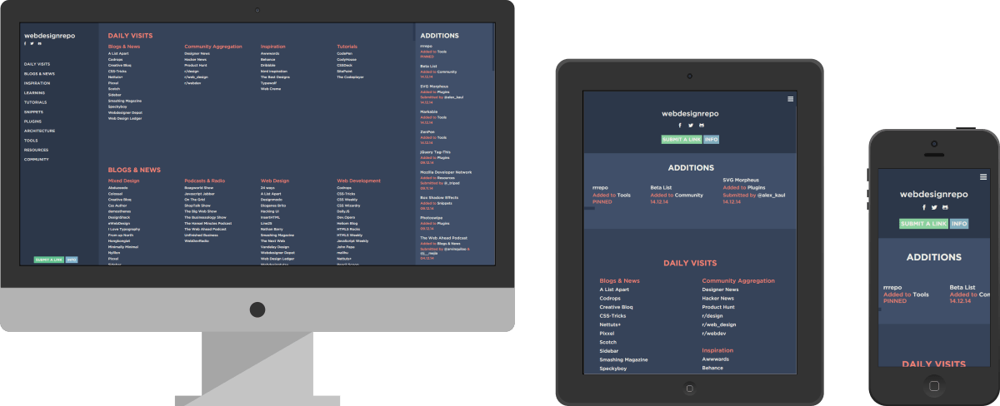

webdesignrepo
January, 2014
webdesignrepo was launched in March 2013, with around 70 links. Now bolstering over 1200 links, the site has grown significantly since. It was redesigned and relaunched in January 2014.
During my first year of webdesign and development, I was fortunate enough to have been given a lot of help from various communities on the internet. webdesignrepo is something I wanted to give back to those communities. A huge collection of all things related to webdesign, and most importantly, only the highest of quality links.
With so much information to display, it was a challenge making it all feel coherent and not overwhelming the user. Using a minimal layout, gracious spacing and bold, clean colour scheme the mountain of links becomes distinct and understandable.